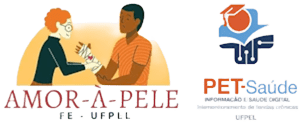

Ciência que chega à beira do leitoNobel de Medicina 2026

Amor à Pele PET-Saúde Digital G10
Prêmio Nobel de Fisiologia ou Medicina 2026
Um interruptor de luz para os neurônios
Uma proteína tirada de uma alga verde permitiu ligar e desligar, com um clarão de luz, apenas os neurônios escolhidos dentro de um cérebro vivo. Isso tem nome: optogenética.
Peter Hegemann, Georg Nagel e Karl Deisseroth, “por suas descobertas sobre canais iônicos ativados pela luz e a optogenética”1.
Experimente: um neurônio que obedece à luz
Este neurônio recebeu os genes de duas proteínas de micróbios. Escolha a cor da luz e acompanhe a membrana e o registro elétrico.
No escuro, o neurônio fica perto de −70 mV e dispara de vez em quando, por conta própria.
O que foi premiado
A descoberta de proteínas de alga que viram canais elétricos quando recebem luz, e o uso delas para controlar neurônios escolhidos1.
Por que importa
Pela primeira vez foi possível testar causa e efeito: acender um grupo de neurônios e ver qual comportamento aparece2.
Onde já chegou
Em 2021, um homem cego por retinose pigmentar voltou a localizar e tocar objetos com óculos especiais após terapia optogenética18.
O Nobel faz 125 anos, e este prêmio conversa com toda a sua história
O químico sueco Alfred Nobel, inventor da dinamite, deixou em testamento a fortuna que criou os prêmios. Os primeiros foram entregues em 1901, valendo 150.782 coroas suecas por área. Em 2026, ano dos 125 anos, a Fundação Nobel elevou o valor para 12 milhões de coroas, divididas quando há mais de um premiado5. Quem escolhe o prêmio de Medicina é a Assembleia Nobel do Instituto Karolinska, em Estocolmo1; a entrega acontece em 10 de dezembro, data da morte de Nobel.
1901primeiro Nobel de Medicina, para Emil von Behring, pelo soro contra a difteria6
12 micoroas suecas em 2026, cerca de US$ 1,2 milhão, para os três dividirem5,3
3é o número máximo de laureados por prêmio, o que deixa colaboradores de fora
A linhagem que leva até a optogenética
O prêmio de 2026 é o capítulo mais recente de uma longa conversa sobre como o neurônio funciona6:
1906Camillo Golgi e Santiago Ramón y Cajal mostram a estrutura do sistema nervoso. Agora se via o neurônio.
1963Eccles, Hodgkin e Huxley explicam o impulso nervoso pelo movimento de íons através da membrana.
1967Granit, Hartline e Wald desvendam a química da visão, incluindo a rodopsina dos nossos olhos, prima distante da canalrodopsina.
1991Neher e Sakmann registram a corrente de um único canal iônico.
2021Julius e Patapoutian identificam os receptores de temperatura e tato.
2025Brunkow, Ramsdell e Sakaguchi descrevem como o sistema imune se freia para não atacar o próprio corpo3.
2026Hegemann, Nagel e Deisseroth: canais iônicos que a luz abre, e a ferramenta que nasceu deles1.
📷
[ Coloque aqui: img/foto-alfred-nobel.jpg ]
Foto real: retrato de Alfred Nobel e seu laboratório reconstituído.
Figura 1. Alfred Nobel (1833–1896), químico e inventor, e o laboratório que ele construiu em 1895 junto à mansão de Björkborn, em Karlskoga, na Suécia, hoje reconstituído em museu com equipamentos originais28. O testamento de Nobel criou os prêmios entregues desde 1901.
Tudo começou com uma pergunta sobre uma alga
A Chlamydomonas reinhardtii é uma alga verde de uma célula só. Ela tem uma mancha alaranjada, o estigma, que funciona como um olho primitivo, e nada em direção à luz2. Peter Hegemann queria entender como ela reagia tão rápido: em cerca de meio milésimo de segundo3.
Não era uma pergunta sobre o cérebro. Era curiosidade pura, e o próprio comitê do Nobel diz que tudo começou por ela1.
Imagem gerada por IA: a alga, seu estigma e a luz. Prompt no relatório.
Figura 2. A alga Chlamydomonas: dois flagelos para nadar e um estigma que percebe a luz. Na membrana dessa região estão as canalrodopsinas.
1971
Dieter Oesterhelt descobre a bacteriorrodopsina, uma proteína de micróbio que usa luz para bombear íons8.
1980–84
Hegemann faz o doutorado com Oesterhelt, estudando a halorrodopsina, bomba de cloreto movida a luz15.
1985
Hegemann começa a estudar como a alga percebe a luz11, depois de um pós-doutorado nos Estados Unidos15.
1995
Georg Nagel e Ernst Bamberg colocam a bacteriorrodopsina em ovos de rã, que passam a reagir à luz11.
1999
Francis Crick sugere que a luz seria o sinal ideal para ligar e desligar um tipo de neurônio, ideia que ele mesmo achava “bastante improvável”7,4.
2001
Suneel Kateriya, do grupo de Hegemann, encontra num banco de genes japonês sequências da alga parecidas com rodopsinas. Hegemann as envia a Nagel, e começa a parceria27,16.
2002
Nasce a canalrodopsina-1: luz e canal na mesma proteína. O nome foi dado pela dupla9,27.
2003
A canalrodopsina-2 se mostra ainda melhor: abre com luz azul e deixa passar cátions, de forma forte e rápida10,2.
2005
No laboratório de Karl Deisseroth, com o gene cedido por Nagel, neurônios de rato cultivados em laboratório disparam a cada clarão azul, com precisão de milissegundos12.
2007
Fibra óptica no cérebro de roedores vivos: a luz move os bigodes de ratos e camundongos13 e acorda camundongos ao acender neurônios de hipocretina do hipotálamo, os mesmos ligados à narcolepsia14.
2021
Primeira recuperação parcial da visão em um paciente cego após terapia optogenética18.
“A optogenética oferece oportunidades de mapear o cérebro de um jeito com que antes só podíamos sonhar.”Per Svenningsson, presidente do Comitê Nobel, no anúncio3
Como a luz vira impulso nervoso
O neurônio comum não enxerga luz. A optogenética dá a ele essa capacidade emprestando um gene da alga. São quatro passos.
O gene. Hegemann e Nagel mostraram que uma única proteína da alga faz duas coisas: capta a luz e abre um poro na membrana9,10.
O veículo. Em 2005, a equipe de Deisseroth usou um vírus modificado, um lentivírus, para levar o gene a neurônios de rato em cultura12. Em 2007, o mesmo recurso levou o gene ao cérebro de animais vivos14. Escolhendo o “endereço” genético, só um tipo de neurônio produz o canal.
O alvo. O neurônio passa a ter canalrodopsinas na superfície. No escuro, nada muda.
A luz. Um pulso azul abre o canal, entram íons positivos como o sódio, a membrana despolariza e o neurônio dispara12. No animal vivo, a luz chega por uma fibra óptica fina implantada13.
Uma comparação para guardar
Pense no cérebro como uma cidade à noite, com bilhões de casas. Um eletrodo é como cortar a energia de um quarteirão inteiro: apagam todas as casas da área. A optogenética instala um interruptor só nas casas de um tipo, digamos as padarias, e as acende ou apaga com um controle remoto de luz. As outras casas da mesma rua ficam como estavam.
É essa seletividade, somada à velocidade de milissegundos12, que transformou a pesquisa: deixou de ser só observar o que acontece junto e passou a ser testar o que causa o quê.
Ligar e também desligar
Para ligar: canalrodopsina
Com luz azul, abre um canal de cátions e excita o neurônio10.
Para desligar: bombas de cloreto
Proteínas como a halorrodopsina, tema do doutorado de Hegemann15, silenciam neurônios8. Em camundongos, uma opsina inibidora ativada por luz amarela reduziu a dor19.
As pessoas por trás da luz
Um químico curioso por algas, um biofísico que foi professor de colégio, um psiquiatra que ainda atende pacientes. A optogenética nasceu do encontro dessas três trajetórias, e de uma equipe maior do que o prêmio consegue nomear.
Quando Thomas Perlmann, secretário do comitê, telefonou para os três, Deisseroth dormia e acordou para atender. Segundo Perlmann, os três disseram a mesma coisa: que era maravilhoso dividir o prêmio com os outros dois3.
Foto real: telão com os três laureados no anúncio em Estocolmo, 5 out. 2026. Ver relatório.
Figura 3. O anúncio no Instituto Karolinska, em 5 de outubro de 2026.
📷
[ img/foto-peter-hegemann.jpg ]
Foto real: retrato de Peter Hegemann. Ver relatório.
Peter Hegemann
Nasceu em 1954, em Münster, Alemanha. Professor de Biofísica Experimental na Universidade Humboldt de Berlim15,1.
Estudou química em Münster e Munique. Fez doutorado com Dieter Oesterhelt no Instituto Max Planck de Bioquímica, sobre a halorrodopsina, e recebeu nota máxima. Depois de um pós-doutorado com Kenneth Foster na Universidade de Syracuse, nos EUA, montou um grupo para estudar os fotorreceptores de microalgas. Foi professor em Regensburg de 1993 a 2004 e está em Berlim desde 200515.
Ele defendia uma hipótese incomum: na alga, uma única rodopsina seria ao mesmo tempo sensor e canal. Passou anos tentando prová-la16.
O traço: persistência numa pergunta básica, por mais de 15 anos, antes de haver qualquer aplicação à vista.
📷
[ img/foto-georg-nagel.jpg ]
Foto real: retrato de Georg Nagel. Ver relatório.
Georg Nagel
Nasceu em 1953, em Weingarten, perto de Ravensburg, Alemanha. Professor na Universidade de Würzburg16,4.
Antes da ciência, foi professor de ensino médio na Suíça por alguns anos. Só então voltou aos estudos e fez o doutorado em biologia e biofísica em Frankfurt, em 198816. No Instituto Max Planck de Biofísica, com Ernst Bamberg, dominou uma técnica chave: colocar proteínas de micróbios em ovos de rã e medir as correntes elétricas que elas produzem11.
Foi ele quem recebeu as sequências da alga, conseguiu produzir as proteínas em células animais e caracterizou em detalhe como funcionavam: canais abertos pela luz16. Os dois batizaram juntos as novas proteínas de canalrodopsinas27.
O traço: a habilidade experimental que transformou uma hipótese numa medida elétrica, e a generosidade de enviar o gene a outros laboratórios.
📷
[ img/foto-karl-deisseroth.jpg ]
Foto real: retrato de Karl Deisseroth. Ver relatório.
Karl Deisseroth
Nasceu em 1971, em Boston, nos Estados Unidos. Professor de Bioengenharia e de Psiquiatria na Universidade Stanford e investigador do Howard Hughes Medical Institute26,4.
Formou-se em Harvard em 1992, fez PhD (1998) e Medicina (2000) em Stanford, e lá completou a residência em psiquiatria25. Há mais de duas décadas atende pacientes no ambulatório e na emergência17. Em 1971, ano em que ele nasceu, Oesterhelt descrevia a bacteriorrodopsina8.
Pediu o gene da canalrodopsina a Nagel e, com os jovens Edward Boyden e Feng Zhang, fez neurônios de mamífero responderem à luz3,4. Escreveu à noite, entre 2015 e 2020, o livro Projections, sobre emoções humanas a partir de histórias de pacientes17.
O traço: um clínico que queria entender as doenças que via no consultório e precisou inventar a ferramenta para isso.
Quem também estava lá
O Nobel aceita no máximo três nomes. A ciência que ele premia foi feita por muito mais gente:
Dieter Oesterhelt
Orientador de Hegemann. Descobriu a bacteriorrodopsina e dividiu com ele e Deisseroth o prêmio Lasker de 20218.
Ernst Bamberg
Parceiro de Nagel no Max Planck de Biofísica, coautor dos artigos de 2002, 2003 e 200511,12.
Edward Boyden e Feng Zhang
Primeiro e segundo autores do artigo de 2005. Boyden seguiu em neurotecnologia no MIT; Zhang tornou-se pioneiro do CRISPR4.
Alexander Gottschalk
Neurobiólogo de Frankfurt que, com Nagel, controlou com luz o comportamento de um verme vivo16.
Kenneth Foster
Físico de Syracuse, cujo trabalho com algas inspirou o rumo de Hegemann8,15.
Gero Miesenböck
Pioneiro do controle óptico de neurônios, premiado com Hegemann e Deisseroth no prêmio Horwitz de 202224.
Do laboratório ao cuidado: quatro cenas
A optogenética é, antes de tudo, uma ferramenta de pesquisa. Com ela se identificaram circuitos de memória, emoção, fome, sede, dor e sono3. As cenas abaixo mostram onde ela já tocou a clínica e onde ainda tropeça. O selo indica o nível da evidência.
Testado em 1 paciente
Um homem cego volta a tocar objetos
Um homem de 58 anos, cego por retinose pigmentar, recebeu no olho uma injeção de vetor viral com o gene da ChrimsonR, uma canalrodopsina que responde à luz âmbar. As células ganglionares da retina, que sobrevivem à doença, viraram as novas receptoras de luz. Óculos com câmera projetam o mundo nesse comprimento de onda. Após treino, ele percebeu, localizou, contou e tocou objetos, mas só com os óculos18.
Lição: foi o primeiro relato de recuperação funcional parcial numa doença neurodegenerativa após terapia optogenética. Ainda é um caso, não um tratamento disponível18.
Em camundongos
Uma luz que liga e desliga a dor
Pesquisadores de Stanford, entre eles Deisseroth, injetaram no nervo ciático vírus com genes de opsinas. A luz azul atravessando a pele provocou dor; uma opsina inibidora com luz amarela reduziu a dor e reverteu a hipersensibilidade num modelo de dor neuropática19.
Para quem cuida de feridas crônicas e pé diabético: a dor neuropática é um dos sintomas mais difíceis de manejar. Estudos assim mapeiam quais fibras sustentam essa dor e servem para testar novos analgésicos.
Em camundongos, com participação brasileira
O “porteiro da memória”, com ciência do Rio Grande do Norte
O neurocientista mineiro Richardson Leão, então ligado à Universidade de Uppsala, na Suécia, e ao Instituto do Cérebro da UFRN, liderou um estudo com Adriano Tort, também da UFRN, e colegas suecos. Com camundongos transgênicos e ferramentas optogenéticas, mostraram que um tipo raro de neurônio do hipocampo, o OLM, favorece a informação que circula dentro do hipocampo e reduz a que chega de fora. Esse neurônio responde à acetilcolina, o neurotransmissor que diminui no Alzheimer20,3.
Lição: pesquisadores brasileiros também usam a técnica. É o tipo de pergunta, um tipo de célula e uma função, que só ficou possível depois de 2005.
In vitro e em camundongos, com limitação
E na pele? Um receptor de cicatrização movido a luz
Uma equipe suíça e austríaca criou o OptoR2, versão do receptor de FGF que a luz azul ativa. Em queratinócitos, a luz disparou a sinalização e a migração celular, etapas da reepitelização. Mas, com o tempo, as células se defenderam: reduziram o receptor e deixaram de responder à luz21.
Lição: a pele não é o neurônio. Ativação contínua pode ser prejudicial para essas células, e não existe hoje curativo optogenético.
Imagem gerada por IA: olho em corte, óculos e luz âmbar. Prompt no relatório.
Figura 4. Na retinose pigmentar, os fotorreceptores morrem, mas as células ganglionares sobrevivem. A terapia as transforma em novas receptoras de luz.
Luz no cuidado: o que é e o que não é optogenética
Quem trabalha com feridas conhece a laserterapia de baixa potência, hoje chamada de fotobiomodulação. Ela usa luz, mas não é optogenética. A diferença está no gene.
Leitura editorial a partir das fontes citadas. A fotobiomodulação tem evidência e protocolos próprios; este quadro serve só para separar os conceitos.
O que ainda não sabemos
Pesquisadores ouvidos pela imprensa lembram que o impacto clínico da optogenética ainda é incerto3. Os obstáculos são concretos:
É terapia gênica. Toda aplicação depende de levar um gene estranho ao corpo, geralmente por vírus, com as questões de segurança que isso traz18.
A luz não atravessa bem o tecido. Por isso o olho, que é transparente, e os nervos perto da pele chegaram primeiro à pesquisa clínica18,19. No cérebro, é preciso implantar fibra óptica13.
As células se adaptam. Na pele, queratinócitos deixaram de responder à luz depois de ativação prolongada21.
A evidência em humanos é pequena. O resultado mais citado vem de um único paciente18.
Até seus criadores pedem cautela. Em 2013, perguntado sobre o uso em humanos, Hegemann respondeu que a optogenética é, antes de tudo, um instrumento de análise29.
Nada disso diminui o prêmio. O Nobel reconhece a ferramenta que mudou a forma de fazer pergunta sobre o cérebro, e esse ganho já está consolidado1.
Leia a notícia com olho clínico
No dia do anúncio, o Nobel virou notícia em dezenas de línguas. Uma boa reportagem vietnamita, publicada pela ZNews e traduzida automaticamente para o português, resume bem o essencial: antes, os métodos mostravam que uma região do cérebro estava associada a um comportamento; a optogenética permitiu provar que um grupo de neurônios causa esse comportamento26.
Mas a mesma matéria, como outras coberturas, traz escorregões que valem como exercício. Compare com as fontes primárias:
“A pesquisa sobre fotogenética ganhará o Prêmio Nobel”
O nome do campo é optogenética, de óptico e genética1. E o verbo no futuro é efeito da tradução automática: o prêmio já tinha sido anunciado.
Em 2005, Deisseroth introduziu o gene em células nervosas de camundongos
O artigo de 2005 usou neurônios de rato cultivados em laboratório12; a própria conta oficial do Nobel fala em “células nervosas de ratos”3. O cérebro vivo veio só em 2007.
Em 2007, o interruptor funcionou no cérebro de ratos vivos
Os bigodes se moveram em ratos e camundongos13, e o experimento do despertar foi feito em camundongos14. Em português, “rato” e “camundongo” costumam se misturar nas traduções.
A lição vale para a prática em saúde: notícia é ponto de partida, nunca ponto de chegada. Antes de repassar um dado, procure o artigo original.
Teste o que ficou
Cinco perguntas de fixação. Toque numa resposta para ver se acertou.
Perguntas para pensar
O Nobel aceita no máximo três laureados. Oesterhelt, Bamberg, Boyden, Zhang e Miesenböck ficaram de fora. Como a ciência deveria reconhecer o trabalho de equipe?
Uma pergunta sem aplicação aparente, sobre como uma alga nada para a luz, virou ferramenta da psiquiatria e da oftalmologia. O que isso diz sobre financiar pesquisa básica, inclusive no Brasil?
Se um dia a dor de uma úlcera crônica puder ser reduzida com luz após terapia gênica, que perguntas de segurança, consentimento e acesso a enfermagem precisaria levar ao cuidado?
O que fica
Uma alga que nada para a luz guardava um canal que a luz abre. Hegemann e Nagel o encontraram, e Deisseroth o levou ao neurônio. O resultado é um interruptor que liga só as células escolhidas, em milissegundos.
Para quem estuda saúde, a lição é dupla. A ciência básica de hoje é o tratamento de amanhã. E toda nova luz no cuidado pede a mesma pergunta crítica: o que está provado em gente, e o que ainda é promessa?
Como as fontes conversam entre si
Cada círculo é uma referência deste infográfico; cada linha, uma relação de sentido entre duas delas. Toque numa referência para ler o comentário e ver com quem ela dialoga.
O prêmioA ideia e a proteínaA ferramenta no cérebroAs pessoasClínica, dor e pele
complementacontrapõe ou limitacita, usa ou resume
As relações de complementar e contrapor são uma leitura editorial nossa. As de citar, usar ou resumir constam nos próprios documentos, inclusive por coautoria.
CZUBAJ, F. Nobel de Medicina 2026: optogenética, la técnica que empezó con una microalga y luego revolucionó el estudio del cerebro. La Nación, Buenos Aires, 5 out. 2026. Disponível em: lanacion.com.ar. Acesso em: 6 out. 2026.
LEMIEUX, J. 2026 Nobel Prize for Physiology or Medicine goes to optogenetics, light-gated ion channels. GEN – Genetic Engineering & Biotechnology News, 5 out. 2026. Disponível em: genengnews.com. Acesso em: 6 out. 2026.
AFP. Nobel prize sum raised to $1.21 million for 2026. Gulf News, 18 set. 2026. Disponível em: gulfnews.com. Acesso em: 6 out. 2026.
NOBELPRIZE.ORG. Nobel Prizes in Physiology or Medicine: relação de laureados desde 1901. Disponível em: https://www.nobelprize.org/prizes/medicine/. Acesso em: 6 out. 2026.
CRICK, F. The impact of molecular biology on neuroscience. Philosophical Transactions of the Royal Society B, v. 354, n. 1392, p. 2021–2025, 1999.
LASKER FOUNDATION. Light-sensitive microbial proteins and optogenetics: 2021 Albert Lasker Basic Medical Research Award. Nova York, 2021. Disponível em: laskerfoundation.org. Acesso em: 6 out. 2026.
NAGEL, G. et al. Channelrhodopsin-1: a light-gated proton channel in green algae. Science, v. 296, n. 5577, p. 2395–2398, 2002.
NAGEL, G. et al. Channelrhodopsin-2, a directly light-gated cation-selective membrane channel. Proceedings of the National Academy of Sciences, v. 100, n. 24, p. 13940–13945, 2003.
MAX-PLANCK-GESELLSCHAFT. Zülch Prize 2012 for founders of optogenetics. 2012. Disponível em: mpg.de. Acesso em: 6 out. 2026.
BOYDEN, E. S. et al. Millisecond-timescale, genetically targeted optical control of neural activity. Nature Neuroscience, v. 8, n. 9, p. 1263–1268, 2005.
ARAVANIS, A. M. et al. An optical neural interface: in vivo control of rodent motor cortex with integrated fiberoptic and optogenetic technology. Journal of Neural Engineering, v. 4, n. 3, p. S143–S156, 2007.
ADAMANTIDIS, A. R. et al. Neural substrates of awakening probed with optogenetic control of hypocretin neurons. Nature, v. 450, n. 7168, p. 420–424, 2007.
HUMBOLDT-UNIVERSITÄT ZU BERLIN. Prof. Peter Hegemann: academic career. Berlim. Disponível em: biologie.hu-berlin.de. Acesso em: 6 out. 2026.
FONDATION LOUIS-JEANTET. Peter Hegemann e Georg Nagel: biografias dos laureados do Prêmio Louis-Jeantet 2013. Genebra. Disponível em: jeantet.ch. Acesso em: 6 out. 2026.
STANFORD MEDICINE. Entrevista com Karl Deisseroth sobre o livro Projections: a story of human emotions. Scope Blog, 2021. Disponível em: scopeblog.stanford.edu. Acesso em: 6 out. 2026.
SAHEL, J.-A. et al. Partial recovery of visual function in a blind patient after optogenetic therapy. Nature Medicine, v. 27, n. 7, p. 1223–1229, 2021.
IYER, S. M. et al. Virally mediated optogenetic excitation and inhibition of pain in freely moving nontransgenic mice. Nature Biotechnology, v. 32, n. 3, p. 274–278, 2014.
LEÃO, R. N. et al. OLM interneurons differentially modulate CA3 and entorhinal inputs to hippocampal CA1 neurons. Nature Neuroscience, v. 15, n. 11, p. 1524–1530, 2012.
RAUSCHENDORFER, T. et al. Acute and chronic effects of a light-activated FGF receptor in keratinocytes in vitro and in mice. Life Science Alliance, v. 4, n. 11, e202101100, 2021.
MOSCA, R. C. et al. Photobiomodulation therapy for wound care: a potent, noninvasive, photoceutical approach. Advances in Skin & Wound Care, v. 32, n. 4, p. 157–167, 2019.
ARMBRUSTER, B. N. et al. Evolving the lock to fit the key to create a family of G protein-coupled receptors potently activated by an inert ligand. Proceedings of the National Academy of Sciences, v. 104, n. 12, p. 5163–5168, 2007.
COLUMBIA UNIVERSITY IRVING MEDICAL CENTER. Karl Deisseroth, Peter Hegemann and Gero Miesenböck awarded Horwitz Prize for foundational work on optogenetics. Nova York, 7 set. 2022. Disponível em: cuimc.columbia.edu. Acesso em: 6 out. 2026.
STANFORD UNIVERSITY. Karl Deisseroth: perfil no Deisseroth Lab. Disponível em: dlab.stanford.edu. Acesso em: 6 out. 2026.
ZNEWS. A pesquisa sobre fotogenética ganhará o Prêmio Nobel de Fisiologia ou Medicina de 2026. Vietnam.vn, Hanói, 5 out. 2026. Tradução automática para o português. Disponível em: vietnam.vn. Acesso em: 6 out. 2026.
HEGEMANN, P.; NAGEL, G. From channelrhodopsins to optogenetics. EMBO Molecular Medicine, v. 5, n. 2, p. 173–176, 2013.
ALFRED NOBELS BJÖRKBORN. Permanent exhibitions: Alfred Nobel’s laboratory. Karlskoga. Disponível em: nobelkarlskoga.se. Acesso em: 6 out. 2026.
THE EMBO MEETING. A pioneer of optogenetics: entrevista com Peter Hegemann. 2013. Disponível em: the-embo-meeting.org. Acesso em: 6 out. 2026.